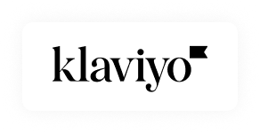
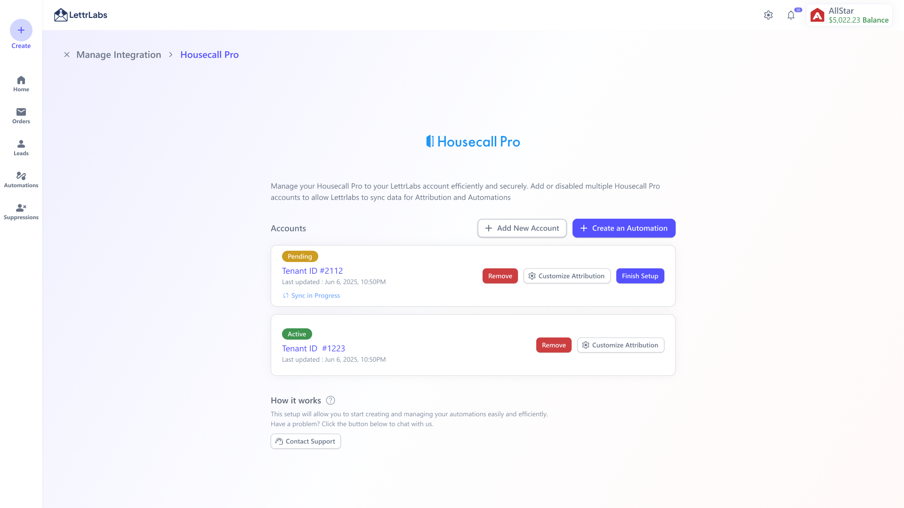
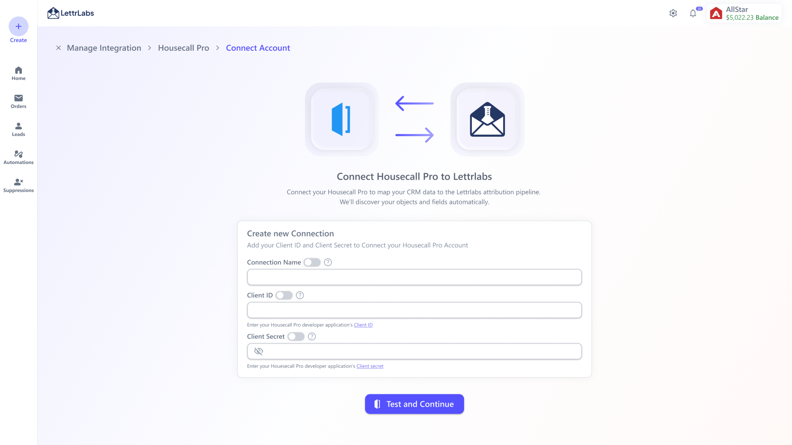
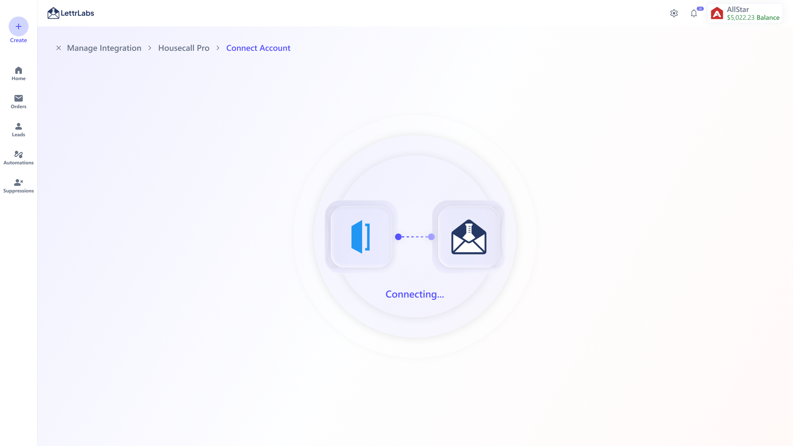
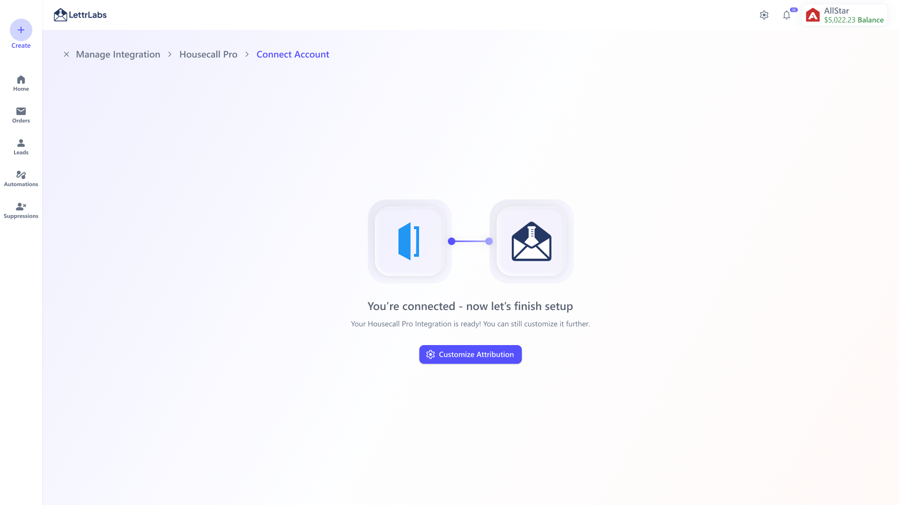
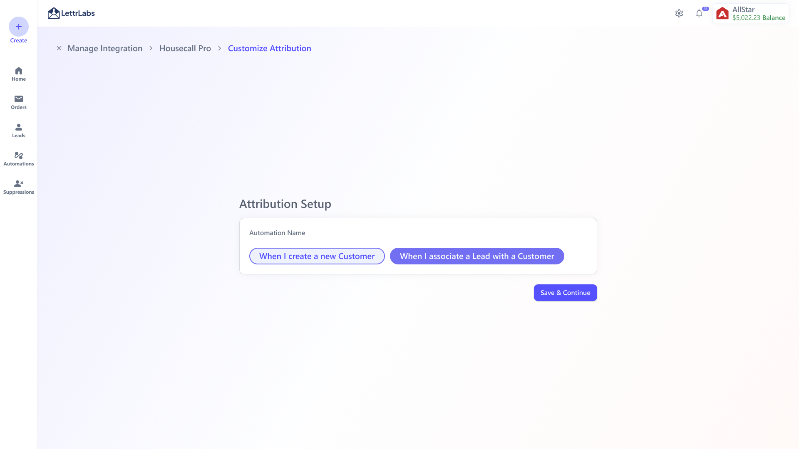
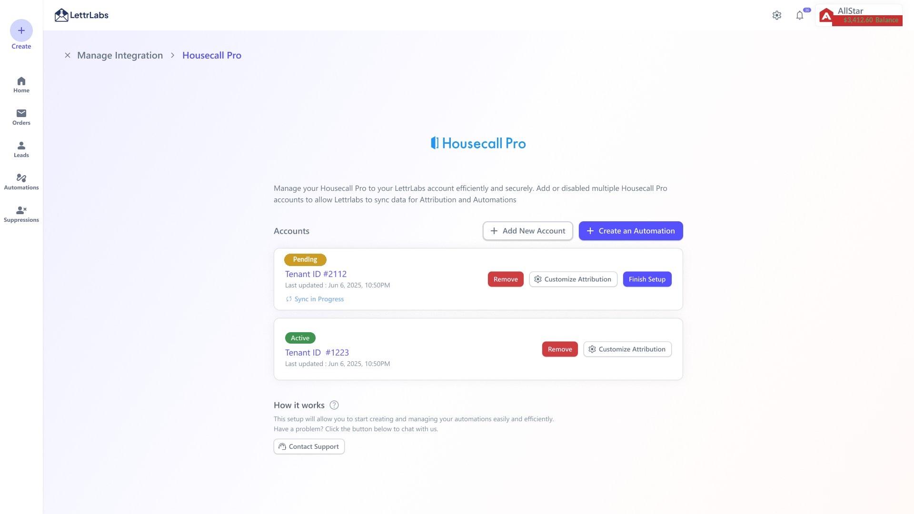

Klaviyo
Fold direct mail into your SMS and email campaigns using your Klaviyo segments.
Connecting one app is easy. The hard part is a system that holds up across CRMs, ecommerce tools, webhooks, custom APIs, attribution, automation triggers, and whatever gets added next, without redesigning everything each time. That's the part I wanted to solve.
Build one integration framework we could reuse, so connecting a third-party app feels familiar, quick, and safe even when the APIs, fields, and business logic underneath are nothing alike.
Customer data lived across 6 separate tools and every connector was a one-off build. 32% of customers already automate from an integration and ~$350K of mail/month runs on that data. Even so, 12 tickets/month asked for new connectors and 16/month came from people stuck setting one up (3 in 10 couldn't finish). Each of those pulled in CS, Sales, and engineering. (Figures from internal product analytics, rounded.)
Led the UX strategy and end-to-end design for one reusable integration framework. I built it as a system around a shared connect → test → attribute → manage lifecycle, so a new connector ships as configuration, not a redesign. Worked with a PM and a developer.
A connector used to take 3 to 4 weeks. It now takes ~2. In the first 3-week parallel batch we shipped 4 new connectors. One of them was Salesforce, asked for by a client worth ~500K mails.
One management screen holds connected accounts, their status and sync details, attribution setup, and the next action. Every connector lives in the same place.

Manage Integration. Connected accounts with status and sync details, plus add-account, automation, and attribution actionsLettrLabs wants to be the one-stop shop for direct mail. Customers keep their leads, purchases, jobs, and CRM activity spread across many platforms though. Every new connector had been its own build, so the same slow, expensive path repeated each time.
So I reframed it. The job wasn't "add one more app." It was the gap between how a new integration should reach a customer and how it actually did.
Expected vs. actual integration journey
Expected
Customers, engineering, and the business agree on which integrations are worth building, guided by what customers actually ask for.
Devs put their time into a proper data pipeline and reuse the same workflow for every integration instead of rebuilding the setup.
Once it's released, the connector is familiar and self-serve, so the customer connects and starts automating within a week.
Reality
A customer asks for an integration. It takes at least a month just to reach management and get prioritized, and that's before any design or build starts.
Devs research the data pipeline, then work with product to design the data model and handle each API's quirks. A fresh custom effort every time.
They finally use it, but it's another unfamiliar process. They hit problems or get stuck, and support gets pulled right back in.
The support queue and the analytics agreed. Integrations were already central to how customers got value, but the way we built and set them up didn't scale. Before I drew a screen, I let the evidence point at the pattern.
No single screen looked wrong. Connecting an app just kept stalling. So I listed every blocker and paired it with the fix the reusable pattern shipped.
Six connectors already existed as one-off builds. The reusable pattern let us add four more in a single three-week run, Salesforce among them, asked for by a client worth ~500K mails. Each one is the same card and the same flow with a different source.

Fold direct mail into your SMS and email campaigns using your Klaviyo segments.
Retarget Shopify customers straight into print, from first-time buyers to win-back segments and more.
Sync Salesforce contacts and pipeline stages to trigger direct-mail automations.
Automate your sending through Zapier's workflow-automation platform and 6,000+ apps.
Reveal anonymous website traffic and retarget those visitors with LettrLabs LeadReveal.
Automatically target storm-affected homeowners in your service area the moment a storm hits. Powered by HailTrace.
Trigger mailers off HubSpot lifecycle stages, list membership, and deal activity.
Automatically reach new movers in your area the week they arrive.
Integrate and automate your sending directly through the LettrLabs Open API.
Target customers automatically based on Housecall Pro jobs and service history.
Sync ServiceTitan jobs and customer records to launch automated field-service campaigns.
Push and pull events in real time and automate your sending through LettrLabs Webhooks.
Build a target audience by searching recipients directly, with no upstream source needed.
Automate mail sending to any recipient list with a simple CSV upload.
Automatically target properties based on new building-permit activity.
Sync AccuLynx roofing jobs and customer records to trigger automated direct-mail campaigns.
The four “New” connectors were added in the first 3-week run on the reusable pattern. The rest already existed as separate one-off builds.
The first design was far more powerful. To connect a CRM like Salesforce, you'd browse the entire schema, hand-map every object and field to the attribution model, define conversion/lead/exclude rules, then run a full extract-and-load pipeline into SQL. It could model almost anything, and that was exactly the problem.
V1 could model anything, but it assumed every user was a data engineer. Two simpler replacements looked elegant and then quietly failed on real Salesforce orgs. Auto-inferred mappings guessed wrong on custom objects and renamed fields, and a single attribution slider couldn't handle two objects, Lead and Opportunity, with non-linear stages. Both were good ideas to kill.
The least clever version held up. You connect with credentials, and attribution becomes its own explicit step. You confirm which statuses count as a Lead, a Conversion, or Job Complete, and a live warning fires if the choice would attribute nothing. A checkbox grid handles the pipelines and non-linear stages the slider couldn't.
| The job | V1, powerful and complex | Shipped, simple and explicit |
|---|---|---|
| Find the data | Browse the full CRM schema and pick objects | Connect with credentials, and the connection exposes what's needed |
| Map it | Hand-map event/customer objects + every field | Confirm which statuses count, a few clicks |
| Attribution | Define conversion/lead/exclude rules up front | Confirm Lead / Conversion stages, warned if nothing would attribute |
| Move the data | Configure and run an extract-load (dbt/SQL) pipeline | The connection tests and syncs on its own |
| How it felt | Like data engineering | Like signing in |
That's the through-line of the whole project. The reusable pattern below is what's left after deciding what the user should never have to care about.
Here's the reusable pattern on a real connector, Housecall Pro. One entry point, a connect step that tests credentials before it moves on, clear connecting and connected states, a management list for multiple accounts, and attribution setup as its own job.

Only the essentials. Name, Client ID, masked Client Secret. Then Test and Continue before anything is saved.

The wait says what it's doing. Credentials are being verified and objects and fields discovered, so it isn't a dead spinner.

Success isn't the end. It routes straight to the next action (Customize Attribution).

Configuration is its own step. Name the automation, pick a trigger, then Save & Continue.

Every connected account sits on one surface with its status (Active / Sync in Progress), last sync, Finish Setup, Customize Attribution, Add New Account, and Remove.
The same pattern has to hold across very different APIs, so the safety lives in validation. It catches problems at entry instead of after a sync has already broken.
| Field / step | Validation added | Why it matters |
|---|---|---|
| Connection identity & credentials | Name, format-checked Client ID, and a masked Client Secret are all required. The secret is never shown again after save. | Accounts stay easy to tell apart, and bad or exposed credentials get caught at entry. |
| Test before save | A live connection test plus object and field discovery have to pass before the user can continue. | No half-connected accounts, and failures show up early enough to recover. |
| Account identity & status | Tenant IDs are unique, duplicates are blocked, and every account shows its sync state with a last-updated time. | People can trust which source is connected and how fresh its data is. |
| Setup completion | Attribution is required before activation, and the automation has to be named and tied to a valid trigger. | Nothing launches on undefined, half-configured data. |
| Destructive change | Removing a connected account takes an explicit confirmation. | Changes that could hit live automations stay deliberate. |
I wrote down what each call cost us, so the PM, engineering, and I could agree faster.
How much should the connect step ask for up front?
Exposing every object and field was powerful, but it turned setup into a data-engineering task. 3 in 10 users stalled before finishing.
Cut connect down to the few required inputs, name, Client ID, and masked secret, all tested before anything saves. Deeper mapping became a separate, optional step.
Use AI to pre-suggest field mappings so even the optional step gets faster.
Connect and attribution, one flow or two?
One flow felt continuous, but attribution carries different business logic and different risk than authentication.
Split them. Connect stays lightweight and works the same everywhere. Attribution is its own job, shown only to the users who need it.
Infer attribution defaults per connector, keeping the explicit step as the override.
Build each connector custom, or one reusable shell?
Custom screens fit each API perfectly, but every new app restarted design and engineering. That was 6 one-off builds at 3 to 4 weeks each.
One reusable lifecycle where logo, name, fields, and attributes are configuration, so a connector ships as setup instead of a redesign. Four shipped in a three-week parallel batch.
A connector "manifest" so a new source can be added with no new design at all.
Where should connection status live?
Keeping status on the detail page was simplest, but users lost track of what was active, syncing, or failed across many accounts.
Put status in the account list and in-app notifications, active, sync-in-progress, failed, or ready, instead of on one screen.
Proactive alerts when a sync breaks, before it silently pauses an automation.
The workflow finally matched how the business, engineering, and customers actually add a source. That mattered more than a prettier connect screen.
The shipped connect → test → confirm → manage flow checks credentials before save and spells out each next action. Completion rate and ticket reduction are what we still need to confirm with live usage.
Lead time per connector went from 3 to 4 weeks down to ~2, and the first parallel batch shipped 4 new connectors in three weeks. One of them was the Salesforce connector a ~500K-mail client was waiting on.
Instead of researching and building each connector from scratch, engineering slots new sources into a stable lifecycle where logo, name, fields, and attributes are configuration.
The reusable pattern shipped across four new connectors, Salesforce, ServiceTitan, HubSpot, and Housecall Pro. It's built so future sources arrive as configuration rather than a redesign.
The baseline was 16 setup tickets a month and 3 in 10 users unable to finish on their own. The new flow has a clear measurement plan behind it. Connection completion, setup tickets, and time to first automation.
The framework links account setup to attribution, automation, and analytics. The chance now is to grow the $350K/month integration-data base with more completed, well-configured connections. I won't claim that growth before it's measured.
I assumed at first that connecting an integration would need a lot of fields and a lot of visible configuration. After working the flow through with the team, the simpler answer turned out to be the better one. Ask for only what's essential, validate it clearly, and let the backend do the hard part.
Version 2 would tighten syncing status, add better search for integrations, support more credential types, and use AI to help preselect fields for automation, data merge, and attribution setup.
"This project taught me that good platform design isn't about showing all the data. It's about knowing which data matters, hiding the rest, and making the next integration easier than the last."